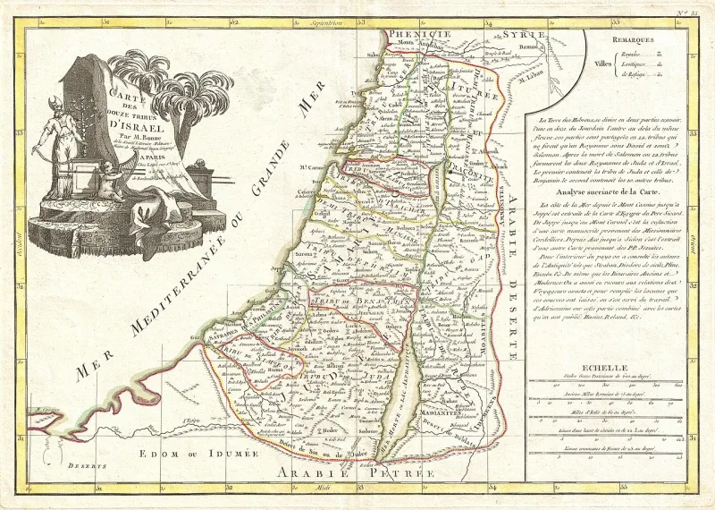
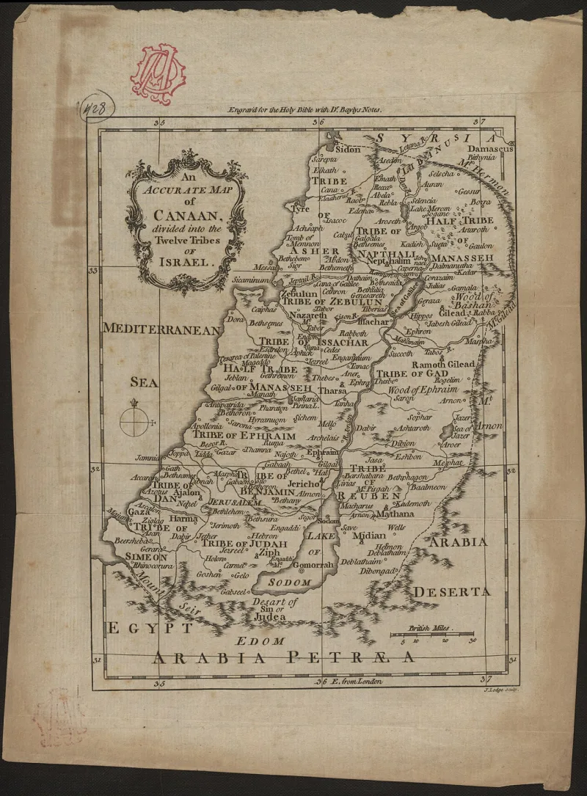

The camps never answer this objection. Ask it, then wait.
A poster you will see at every street teaching. It maps each of the twelve tribes onto a modern nation.
Black Americans are Judah. West Indians are Benjamin.
Haitians are Levi. Puerto Ricans are Ephraim.
Native Americans are Gad. And so on down the list.
That is the question. No ancient source contains it.
No medieval one either. It was assembled in the twentieth century, inside the movement, and it has changed between camps.
They argue on prophetic grounds rather than documentary ones. The records were destroyed deliberately — that is the point of the curse.
A people stripped of name, language and lineage cannot be asked to produce paperwork proving they were stripped of paperwork. Demanding a genealogy from a descendant of slaves is, they say, cruelty dressed as rigour.
It has real moral force, and you should say so. But it cannot be tested in either direction.
It explains in advance why no evidence will ever be found, which means no evidence could ever count against it.
Strong for you. The destroyed-records defence is never squared with the fact that the chart itself makes specific, checkable claims.
"Who first drew this chart, and when? I'd genuinely like to read the source."


The records were destroyed on purpose. Asking a slave's child for papers is cruel.
Teachers defend the chart on prophetic grounds, not documentary ones. Records were destroyed on purpose, they argue. That is the point of the curse. A people stripped of name, language and lineage cannot be asked for paperwork. The paperwork is the very thing that was taken. Demanding a genealogy from the children of chattel slaves is demanding what the oppressor burned.
In its place they offer prophetic match. They read Jacob's blessings in Genesis 49 and Moses' blessings in Deuteronomy 33. Then they read each group's character and history against them. They read the routes of the Atlantic trade the same way.
Judah receives the sceptre and the lion. They map that to the weight of Black America. Issachar is the strong ass couching between two burdens. They map that to Mexican labour. The chart is a teaching aid, they say, for a restoration God is performing. It is not a claim to have found a birth certificate.
Strong for you. The chart is younger than the moon landing. Ask for its source.
The destroyed-records defence has real moral force. State it at full strength. Slavery did erase lineage, and asking for documents can be a cruel move.
But the defence cannot be tested either way. And it does not explain what the chart positively says. Lost records would produce silence. They would not produce a confident twelve-way assignment. The Genesis 49 matches are read backward from conclusions already held. Different camps also assign the same group to different tribes. That is not what a preserved tradition looks like.
The decisive fact is the date. The chart is younger than the moon landing. A page drawn up in 1970s Harlem is being asked to certify an identity claimed from antiquity. No camp has offered a source for it older than its own founders.